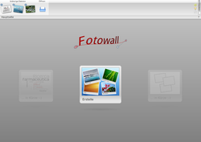

Fotowall
Dieser Artikel wurde für die folgenden Ubuntu-Versionen getestet:
Ubuntu 16.04 Xenial Xerus
Ubuntu 14.04 Trusty Tahr
Zum Verständnis dieses Artikels sind folgende Seiten hilfreich:
Fotowall  ist eines der seltenen Programme, die nicht die technische Seite der Bildbearbeitung in den Vordergrund stellen, sondern ganz bewusst den kreativen Prozess unterstützen: Bilder, Grafiken und Texte können zu einer Foto-Montage bzw. Collage verschmolzen werden. Wer sich darunter nichts vorstellen kann, schaut sich die Beispielbilder an, die einen kleinen Vorgeschmack der Möglichkeiten des Programms vermitteln.
ist eines der seltenen Programme, die nicht die technische Seite der Bildbearbeitung in den Vordergrund stellen, sondern ganz bewusst den kreativen Prozess unterstützen: Bilder, Grafiken und Texte können zu einer Foto-Montage bzw. Collage verschmolzen werden. Wer sich darunter nichts vorstellen kann, schaut sich die Beispielbilder an, die einen kleinen Vorgeschmack der Möglichkeiten des Programms vermitteln.
In der geplanten Version 1.0 sollen weitere Funktionen wie ein integrierter PDF-Export, eine einfachere Druckmöglichkeit und weitere Effekte realisiert werden. Ein Erscheinungstermin ist bisher unbekannt. Bei der Gestaltung der Programmoberfläche kommt die Grafikbibliothek Qt4 zum Einsatz.
Linux-Programme mit ähnlichen Funktionen sind rar. Erwähnenswert sind zum einen Fotoxx mit seiner integrierten Mashup-Funktion und zum anderen PhotoCollage, das sich auf reine Bildcollagen beschränkt.
| Programmoberfläche |
| Beispiel: Collage |
| Beispiel: Wortwolke |
| Beispiel: Kalender |
Weitere Beispielbilder gibt es auf der Homepage.
Installation¶
 Das Programm ist bis einschließlich Ubuntu 14.04 in den offiziellen Paketquellen enthalten [1]:
Das Programm ist bis einschließlich Ubuntu 14.04 in den offiziellen Paketquellen enthalten [1]:
fotowall (universe)
 mit apturl
mit apturl
Paketliste zum Kopieren:
sudo apt-get install fotowall
sudo aptitude install fotowall
Zur Installation unter Ubuntu 16.04 siehe Problembehebung.
Verwendung¶
Nach der Installation befindet sich bei Ubuntu-Varianten mit einem Anwendungsmenü ein Programmstarter unter "Grafik -> Fotowall" [2]. Alternativ kann man es mit dem Befehl fotowall im Terminal starten.
Dass Fotowall noch weitere Pläne hat, bemerkt man spätestens beim Programmstart: ausgegraute Schaltflächen mit dem Vermerk "in Kürze" (engl. asap – as soon as possible) verweisen auf noch nicht implementierte Funktionen. Dafür liegt die Schaltfläche "Erstelle" zentral in der Mitte und wartet auf einen Mausklick. Wer dagegen bereits eine Fotowall erstellt und gespeichert hat, kann diese über die entsprechende Schaltfläche links oben im Programmfenster wieder öffnen (davor stehen die zuletzt benutzen). 
Die Programmoberfläche wirkt auf den ersten Blick ungewohnt, aber dafür sehr übersichtlich. Am oberen Bildschirmrand befindet sich eine Symbolleiste mit allen Funktionen. Bevor man neue Bilder und anderes einfügt, sollte man unter dem Punkt "Canvas" kontrollieren, was man eigentlich erstellen will:
Bildschirm (Vollbildmodus minus obere Leiste)
Genaue Größe (Länge x Breite in cm; Hoch- oder Querformat)
Desktop (exakte aktuelle Auflösung)
CD-Hülle
DVD-Hülle
In der nachfolgenden Tabelle finden sich die Grundfunktionen.
| Fotowall | |
| Schaltfläche | Beschreibung |
| vorhandene .fotowall-Datei öffnen | |
| Bild hinzufügen | |
| Text hinzufügen | |
| Wortwolke erstellen – dazu eine Textdatei auswählen, die als Basis dienen soll. Leider sind die Gestaltungsmöglichkeiten nur sehr begrenzt. Ein Wordcloud-Editor soll mit Version 1.0 nachgereicht werden. | |
| Neue Leinwand hinzufügen – hiermit kann eine bestehende .fotowall-Datei eingefügt werden. | |
Suche nach Bildern im Internet – integriert sind Flickr  und Google , wobei Google nicht funktioniert (Stand: 12/2011). Bei der Verwendung fremder Bilder bitte Nutzungsrechte beachten! und Google , wobei Google nicht funktioniert (Stand: 12/2011). Bei der Verwendung fremder Bilder bitte Nutzungsrechte beachten! | |
Bilder zur Leinwand hinzufügen¶
Der erste und wichtigste Arbeitsschritt, wenn man eine Collage erstellen will. Die Schaltfläche "Öffnen" öffnet ein Dateiauswahl-Fenster, in dem das gewünschte Bild markiert und geöffnet wird. Um gleich alle Bilder eines Ordners auf einmal zu laden, navigiert man zum jeweiligen Ordner und betätigt
Strg +
A vor dem Öffnen. Alternativ lassen sich bei gedrückter
Strg -Taste mehrere Bilder gemeinsam per Linksklick  auswählen.
auswählen.
Folgende Bild-Formate werden unterstützt: BMP, GIF, ICO, JPG/JPEG, MNG, PBM, PGM, PNG, PPM, SVG, SVGZ, TIF/TIFF, XBM und XPM.
Jedes importierte Bild kann nun nach eigenem Wunsch in der Größe geändert, gedreht oder gespiegelt werden. Über die rechte Maustaste  stehen weitere Optionen und Effekte zur Verfügung (siehe Abbildungen).
stehen weitere Optionen und Effekte zur Verfügung (siehe Abbildungen).
| Bild-Optionen |
| Bild-Effekte |
Neu anordnen¶
Beim Import mehrerer Bilder auf einmal erscheinen diese als Bilderstapel auf der Zeichenfläche. Um diese großzügig über die Leinwand zu verteilen, dient der Punkt "Neu anordnen". Diese Option funktioniert wie ein Kartenspiel, das man aus 1m Höhe auf den Boden fallen lässt... mit dem feinen Unterschied, dass alle Bilder anschließend ihre Vorderseite zeigen.
Wer die Funktionsweise von "Neu anordnen -> Aktiviere Erzwingen-Feld" erklären kann, darf diese hier gerne hinzufügen...
Hintergrund¶
Der Hintergrund der Collage kann in Grenzen gestaltet werden. Zur Auswahl stehen transparent, schwarz, weiß oder ein grauer Farbverlauf. Je nach Geschmack kann man auch ein Einzelbild nutzen, um es als Leinwand festzulegen. Dieses Bild kann nicht gleichzeitig innerhalb der Collage verwendet werden (dann muss man es zweimal importieren).
Dekoration¶
Soll die Collage eine Überschrift haben? Falls ja, kein Problem: "Setze Titeltext" auswählen und diesen eingeben. Diese Farbe lässt sich anschließend beim Überfahren mit der Maus festlegen (zum nachträglichen Ändern der Farbe die Maus mittig auf dem Titel positionieren). Die Überschrift lässt sich schlecht lesen? Dann kann man der Collage noch oben und/oder unten einen waagerechten grauen Balken hinzufügen. Allerdings bleibt der Titel immer oben stehen.
Text einfügen¶
Unabhängig von der Bildbeschriftung können Textblöcke in beliebiger Anzahl eingefügt werden. Diese Blöcke lassen sich wie Bilder an den Ecken drehen, vergrößern oder verkleinern sowie horizontal und vertikal spiegeln. Zusätzlich können Effekte wie Schattenwurf, Transparenz, Unschärfe sowie ein Pfad zur Ausrichtung verwendet werden.
Wer gerne mit Textblöcken arbeitet: eine handschriftähnliche Schriftart verbessert unter Umständen das Ergebnis. Solche Schriftarten (Fonts) findet man im Internet unter den Stichworten "brush calligraphy handwritten fonts" z.B. bei dafont.com . Aber Vorsicht: hier gilt das gleiche wie beim Import fremder Bilder von Flickr – Nutzungsbedingungen beachten!
Bei der Installation neuer Schriftarten hilft der Artikel Schriften weiter. Nützlich kann in diesem Zusammenhang auch ein Fontmanager sein.
Hinweis:
Leider gibt es unter Ubuntu bereits so viele verschiedene Schriftarten, so dass unter Umständen nur ein Teil zur Auswahl angezeigt wird. Dann hilft eine vorübergehende Positionierung des Textblocks am unteren Bildrand, um mehr Platz zur Anzeige der Schriftarten zu erhalten.
Export¶
Die fertige Collage kann in folgenden Formaten exportiert bzw. gespeichert werden:
Bild (Format wird wie in GIMP über die Datei-Endung festgelegt; JPG und PNG wurden erfolgreich getestet)
Hintergrundbild (Dateiname ~/fotowall_background.jpg; muss anschließend noch manuell als Hintergrundbild ausgewählt werden)
Posterdruck mit PosteRazor
Drucken (die Drucker-Auswahl erfolgt nach der Angabe der Größe)
PDF-Dateien lassen sich mit CUPS-PDF erstellen
Vektorgrafik im SVG-Format (zum Nachbearbeiten, beispielsweise mit Inkscape)
Einstellungen¶
 Die Einstellungsmöglichkeiten rechts außen auf der Symbolleiste beschränken sich auf zwei Punkte. Die Konfiguration wird in der Datei ~/.config/Enrico Ros/Fotowall.conf im Homeverzeichnis gespeichert.
Die Einstellungsmöglichkeiten rechts außen auf der Symbolleiste beschränken sich auf zwei Punkte. Die Konfiguration wird in der Datei ~/.config/Enrico Ros/Fotowall.conf im Homeverzeichnis gespeichert.
Transparenter Hintergrund¶
Um den Desktop-Hintergrund durch die Arbeitsfläche von Fotowall durchscheinen zu lassen, wird ein Composite-Manager wie z.B. Compiz benötigt. Damit müsste sich das Programm mit transparentem Hintergrund auch problemlos unter Unity (nicht Unity 2D!) ausführen lassen.
Tipps¶
 Abschließend noch einige Problemlösungen bzw. Hinweise:
Abschließend noch einige Problemlösungen bzw. Hinweise:
Das Programm enthält keine Rückgängig-Funktion – zwischenspeichern!
Gespeicherte Fotowalls werden nicht immer 1:1 wieder geladen – unter Umständen sind kleinere Nacharbeiten notwendig
Probleme beim Arrangieren der Bilder? Ein Linksklick
zum Auswählen, dann bei gedrückter linker Maustaste das Bild positionieren. Leider fehlt ein Fangraster, dass die Ausrichtung erleichtern würde.Beim Speicherformat .fotowall handelt es sich um XML
Wer einen Foto-Kalender erstellen will, braucht noch die entsprechenden Kalenderdaten. Diese liefert das Kommandozeilen-Programm
cal(siehe auch die Manpage zucal)Falls Grafiken für eine Collage benötigt werden, ist das Projekt Openclipart sehr nützlich. Vektorgrafiken im SVG-Format, die sich ohne Qualitätsverlust beliebig skalieren lassen, sind besonders gut geeignet.
Problembehebung¶
Ubuntu 16.04¶
Da Fotowall inzwischen nicht mehr Bestandteil der offiziellen Paketquellen ist, erfolgt die Installation bei Ubuntu 16.04 durch Herunterladen und anschließender manueller Installation des Pakets fotowall_0.9-11_ARCHITEKTUR.deb  [3]. Von der Version 0.98~beta wird abgeraten: Hier fehlt die Schaltfläche "Export" (1562374).
[3]. Von der Version 0.98~beta wird abgeraten: Hier fehlt die Schaltfläche "Export" (1562374).
Links¶
Créez vos pêle-mêle de photos avec Fotowall
 - Blogbeitrag, 03/2015
- Blogbeitrag, 03/2015An die Wand gepinnt - Digitale Fotopinnwand basteln
- Artikel EasyLinux 01/2009Fotowall im französischen Ubuntu-Wiki
PhotoCollage - für einfachste Collagen
GTK+ collage
oder "gollage" ist eine weitere Möglichkeit für Collagen im Beta-Stadiumpicturetile.pl
- Perl-Skript für CollagenToday's hack: picturetile.pl
- weitere Infos, Blogbeitrag 03/2005
Metapixel - Erstellung von Foto-Mosaiken
- Erstellt mit Inyoka
-
 2004 – 2017 ubuntuusers.de • Einige Rechte vorbehalten
2004 – 2017 ubuntuusers.de • Einige Rechte vorbehalten
Lizenz • Kontakt • Datenschutz • Impressum • Serverstatus -
Serverhousing gespendet von